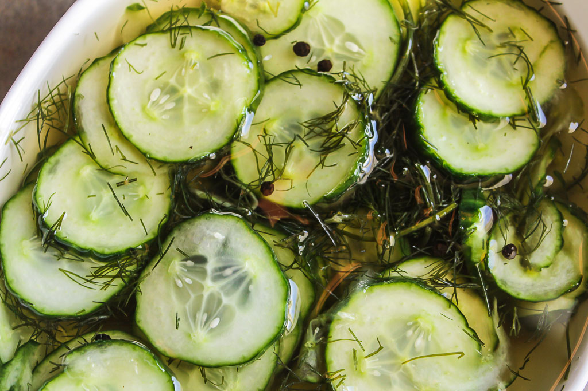

Danish Cucumber Salad

AGURKESALAT
Vinegar and pickled foods are super popular in Denmark,
and you'll often find something like this served as a side dish.
INGREDIENTS
- 3 cucumbers, if using English or Burpless cucumbers only use one or two
- salt to taste
- 1 cup water
- 1 cut white vinegar
- 4 tablespoons sugar
- 1/2 tablespoon black pepper
- Onion, vidalia or walla walla sliced thin
STEPS
- Wash and peel cucumbers.
- Cut cucumbers into very thin slices and place in medium bowl,
salt lightly, and let stand for 15 minutes.
- Pour off all liquid from cucumbers.
- In a small bowl mix together the water, vinegar, sugar and pepper.
Thinly sliced vidalia or walla walla onions can be placed in the salad
also according to taste and this is optional.
- Pour mixture over the cucumbers and place in the refrigerator for one hour or until chilled.
Drain off liquid again or serve with a slotted spoon.